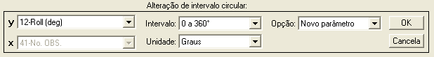
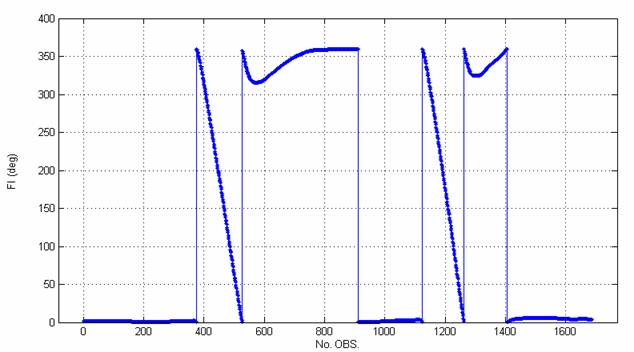
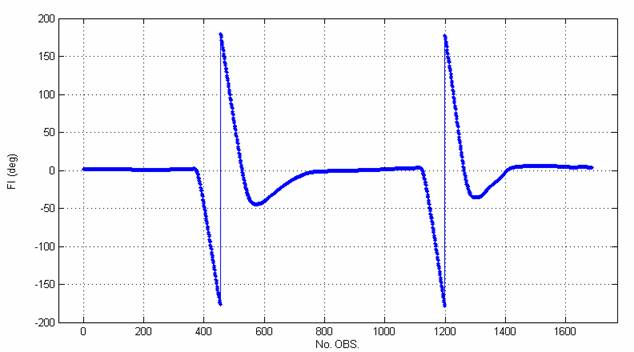
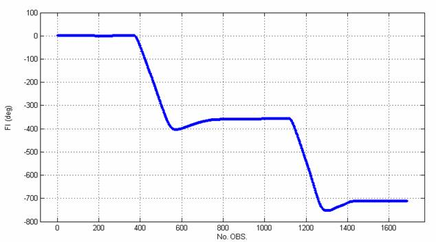
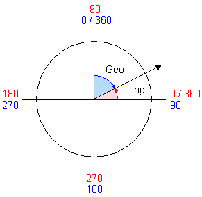

|
Menu Funções |
|
Alterar
Intervalo Circular
Essa função
permite alterar o intervalo em que está
compreendido um parâmetro de medida angular.
Clique no menu “Funções ►
Alterar intervalo circular”.
A Caixa de
Diálogo solicitará que o usuário indique os
parâmetros para a alteração:

● No campo “y”,
indique o parâmetro desejado.
● No campo
“Intervalo”, indique o intervalo desejado.
As opções são as seguintes:
|
Opção |
Descrição |
|
|
Todos os
valores são convertidos para a primeira representação positiva do
ângulo. |
|
|
Todos os
valores são convertidos para o intervalo de ±180°, tipicamente
utilizado em parâmetros de atitude longitudinal e lateral. |
|
Contínuo |
Os trechos são
encadeados de forma a representarem um traço contínuo, sem limites
angulares. |
|
Trig -->
Geo |
Converte um
ângulo medido no círculo trigonométrico para sua representação
no sistema geográfico terrestre. |
|
Geo -->
Trig |
Converte um ângulo medido no sistema geográfico terrestre para sua representação no círculo trigonométrico. |
Obs.: O sistema trigonométrico considera o zero no eixo x e é crescente no sentido anti-horário.
O sistema geográfico terrestre considera o zero no eixo Norte e é crescente no sentido horário.
● No campo
“Unidade”, indique a unidade do parâmetro a
ser alterado. As opções são Radianos e Graus.
● No campo
“Opção”, indique se deseja criar um novo
parâmetro ou substituir o atual com os dados modificados.
As figuras a
seguir mostram os traços de inclinação lateral
de uma aeronave usando os três tipos de intervalo circular. A manobra
apresentada constitui uma sequência de dois rolamentos completos para a
esquerda.
Inclinação
lateral durante rolamentos usando o intervalo de

Inclinação
lateral durante rolamentos usando o intervalo de

Inclinação
lateral durante rolamentos com traço contínuo:

A figura a
seguir mostra a relação entre um ângulo medido
no círculo trigonométrico (vermelho) e sua representação no sistema geográfico
terrestre (azul):

Ao clicar “OK”,
o usuário deverá fornecer o nome do novo parâmetro
ou confirmar a substituição do parâmetro original, dependendo da
seleção do
campo “Opção”.


No primeiro
caso, após definir o nome e pressionar “OK”, o
novo parâmetro com intervalo alterado será acrescentado à penúltima
posição das
matrizes de trabalho (antes de “No.OBS.”).
No segundo
caso, ao clicar “Sim” o parâmetro será
atualizado.
|
|
Reamostrar |
Centrar
no
ponto selecionado |
|